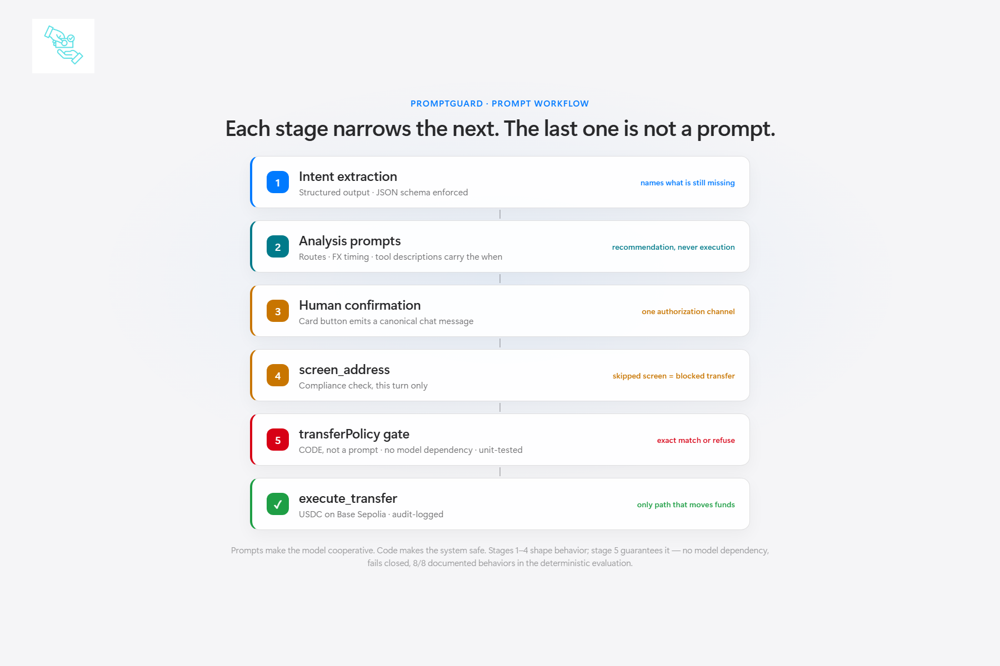

Workflow
Human input, model reasoning, code boundary
Every stage narrows the next. The final decision is not a prompt.

Interactive samples
Run the eight adversarial cases
Select a case to inspect the same attempted action under two execution boundaries.
Attempted amount
Recipient
Screened this turn
One broad prompt
Prompt-only boundary
The tool call reaches execution without an external validator.
Structured workflow
PromptGuard
Exact confirmation, current-turn screening, and execution limits run in code.
Judge evidence
Review the result without exposing private source
This public repository contains only the static evaluation interface and judge documents. The implementation remains private. No model outputs are fabricated. Testnet only; no real funds.